Мой компьютер
Процессор
Процессор покупался на маркетплейсе OZON за 50$. Это Ryzen 5 5500 OEM. Прекрасный процессор из бюджетной категории.
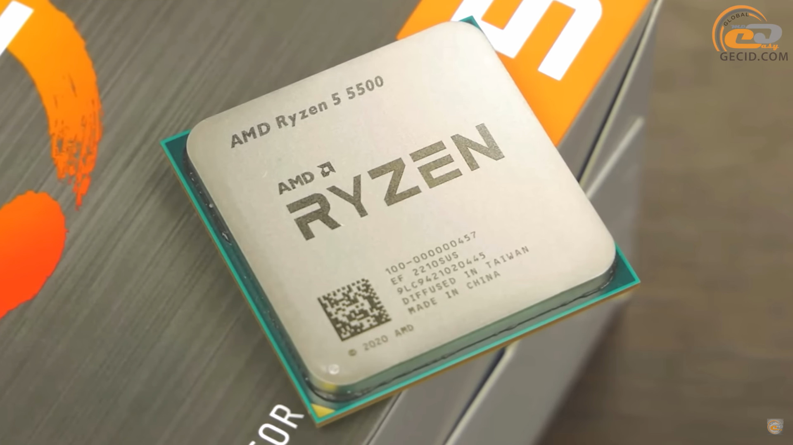
Материнская плата
Материнская плата покупалась также на OZONе. Материнская плата AMD B450 PRO. Её стоимость составляет 50$. Идеально подходит под процессор.
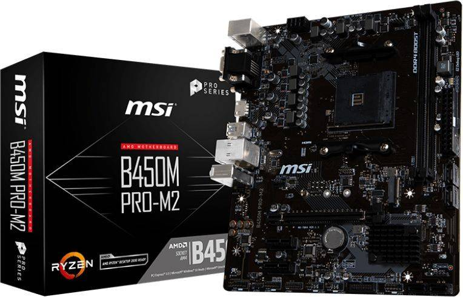
Кулер
При выборе кулера, мой выбор пал на кулер от компании SNOWMAN, MT5-V3. Прекрасный кулер типа tower с 5-ю теплотрубками, что обеспечит прекрасное охлаждение процессора
при высоких нагрузках при работе ПК. Его стоимость 20$.
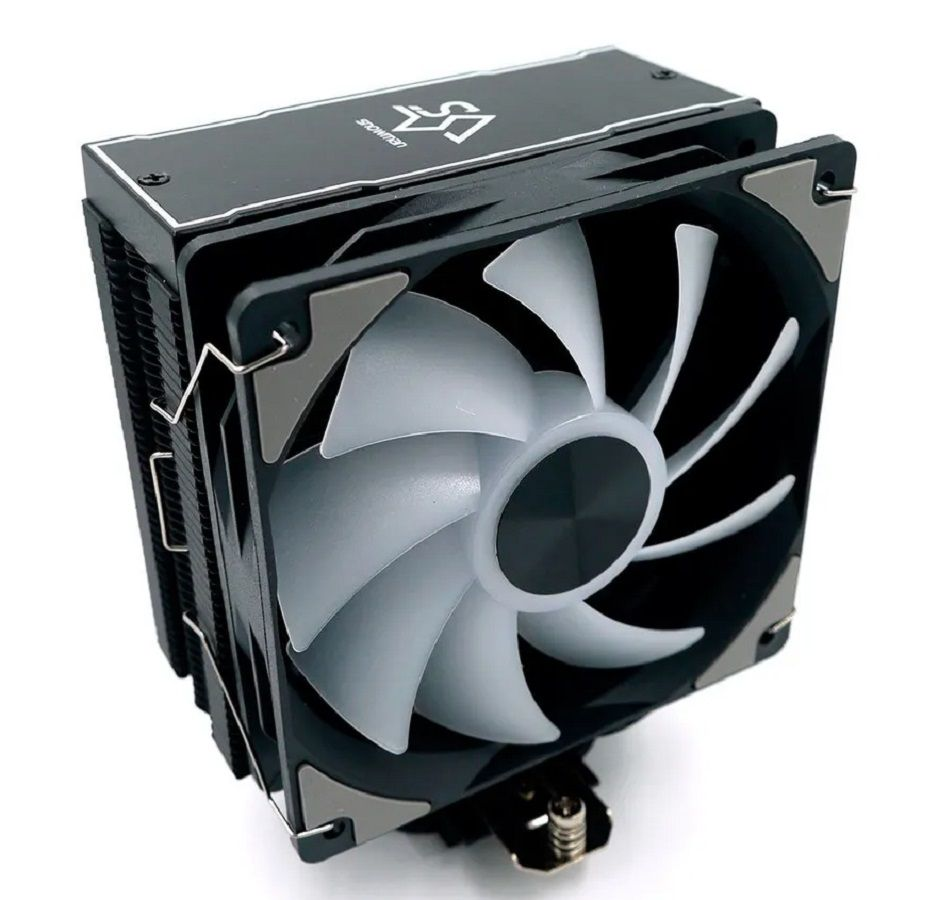
Блок питания
Блок питания выбирался под материнскую плату и процессор и видеокарту, чтобы всё работало без перебоя в питании. Нужен был блок питания на 600W и мой выбор пал на БП от компании
GAMEMAX VP-600W. Он обеспечивает прекрасную подачу питания на весь компьютер, а также обладает ECO режимом, что позволяет снизить потребление электричества.
Прекрасный вариант за 43$.
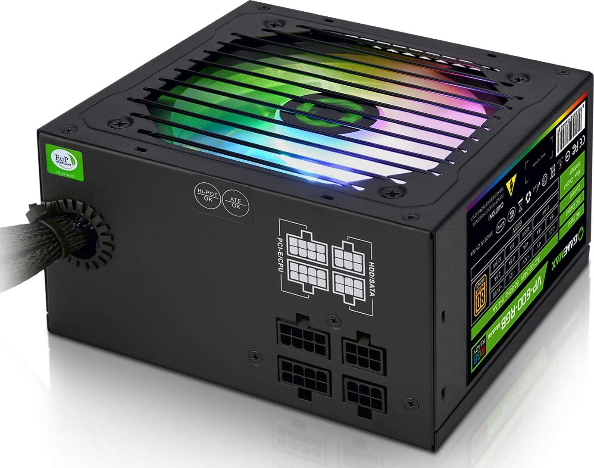
Оперативная память
Оперативная память для довольно бюджетной сборки была выбрана от компании HyperX FURY DDR4 3200Hz. Две плашки по 8Gb обеспечивают достаточный объём памяти для работы программ и игр.
Скорость загрузки даёт хорошее быстродействие процессора. Цена в 50$ предоставляет прекрасную возможность включить эту память в бюджетную сборку ПК.
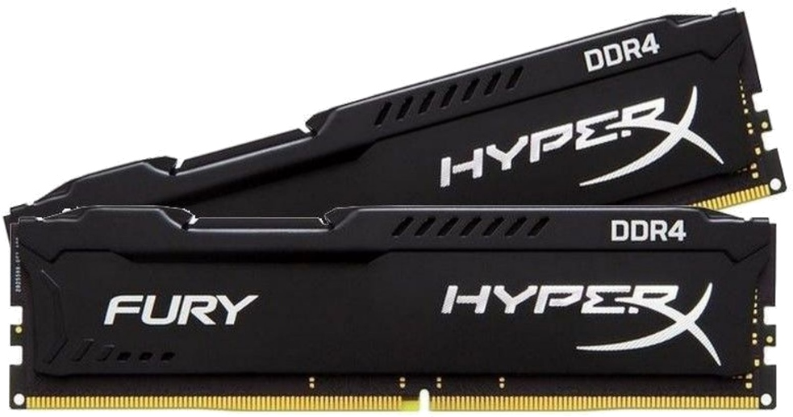
Видеокарта
Теперь перейдём к самому интересному, конечно же это видеокарта. GTX 1060 6Gb. Она покупалась с Avito уже в б/у состоянии, но со всеми пломбами и в полностью рабочем состоянии.
Это уже давно устаревшая модель, но она прекрасно справляется со всеми современными новинками на средних-высоких настройках графики. Хороший выбор за 120-150$.
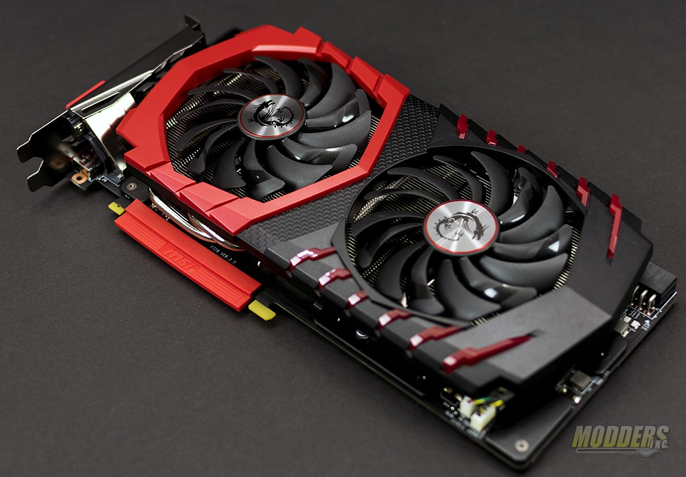
Накопители
Я использую два накопителя типа HDD. Это внутренний жёсткий диск Seagate BarraCuda ST2000DM008 на 1TB и внешний Seagate 1TB STEA2000400. Общий объём с двух дисков
составляет 2TB, что в современных реалиях даёт вполне хороший объём для всех возможных потребностей пользователя (мои потребности они полностью закрывают). Их общий ценник 60$.
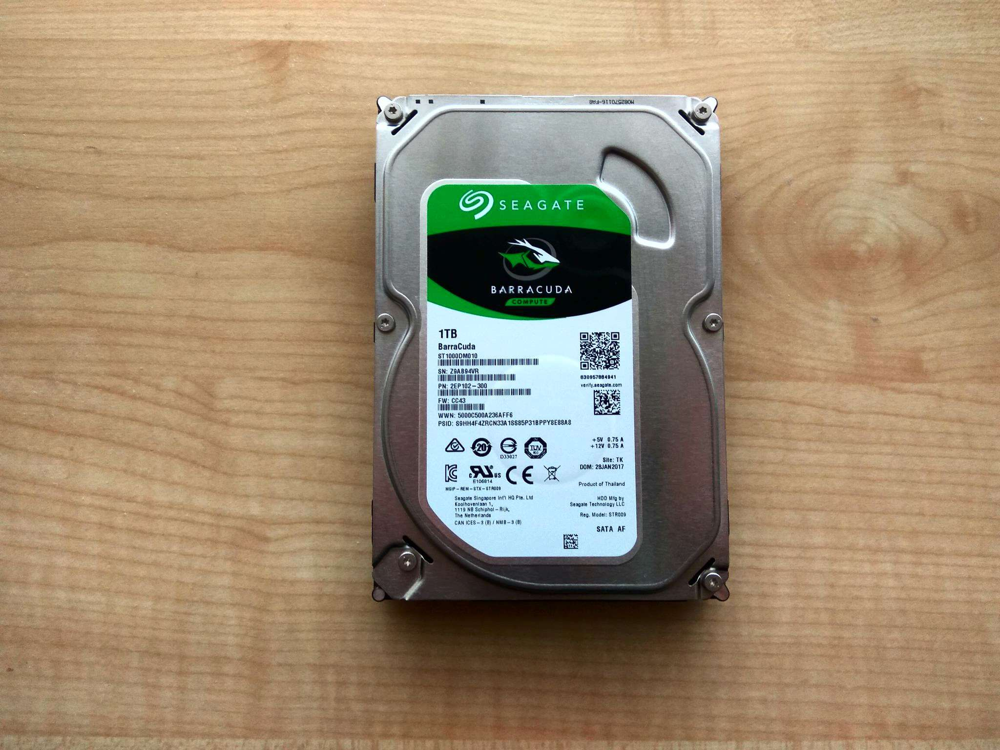
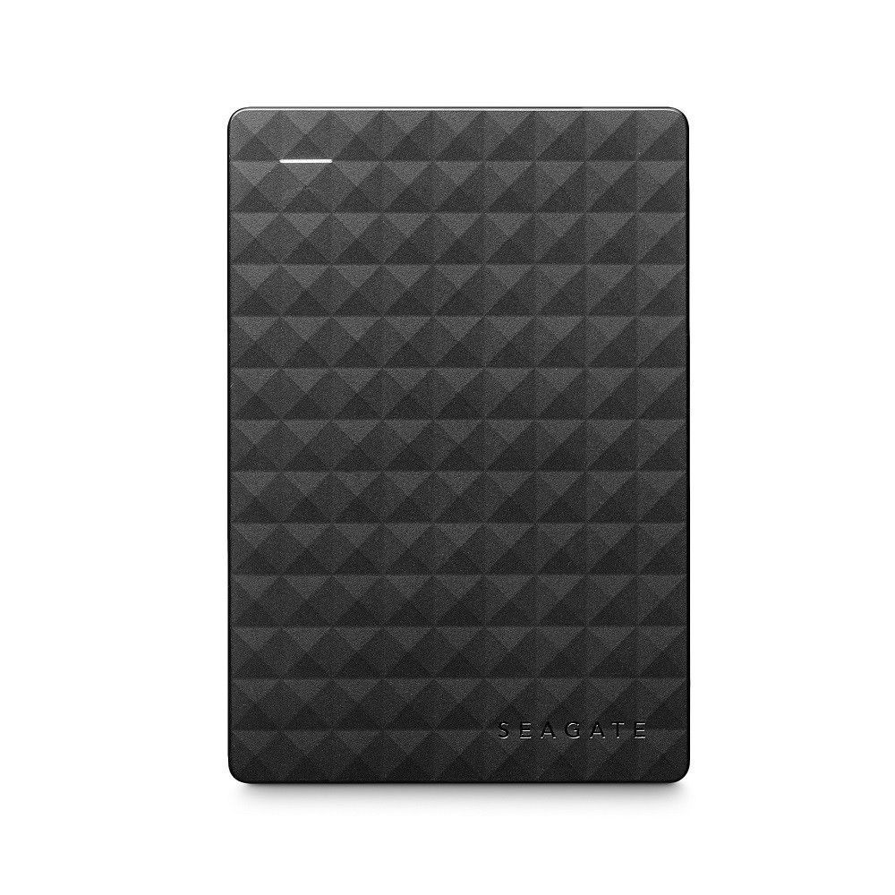
Периферийные устройства
Периферийные устройства занимают важную роль при взаимодействии с компьютером, ведь без них невозможно будет вводить команды компьютеру и с ним взаимодействовать.
Мониторы
Свой рассказ о моей периферии я хочу начать с мониторов, та самая вещь, куда выводится вся информация. Я использую два монитора, которые висят на двойном кронштейне.
Основной монитор
LG 24MS500-B с шириной 24 дюйма, что обеспечивает хорошую ширину картинки и чёткость изображения, а частота в 100 Гц даёт хорошую плавность изображения. Цена: 90$
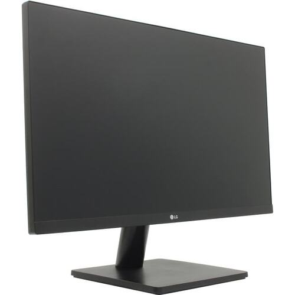
Второй монитор
SAMSUNG LS19F350HNI на 18.5 дюймов находится в книжном положении. На данный монитор удобно выводить текстовую информацию, его положение позволяет увидеть намного больше текста при одном скролле страницы.
Частота составляет 60 Гц. Цена: 20$
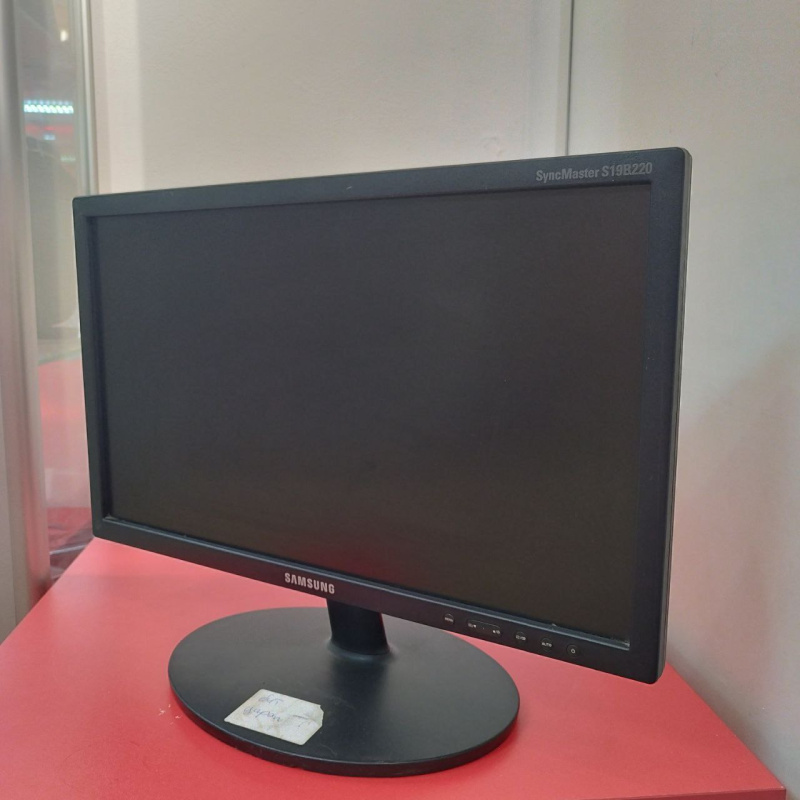
Кронштейн для мониторов
Кронштейн у меня специально для двух мониторов с двумя креплениями под них. Я использую ONKRON G160. Он может выдержать нагрузку до 8 кг и держать два монитора под 32 дюйма. Покупался он на маркетплейсе OZON за 50$.
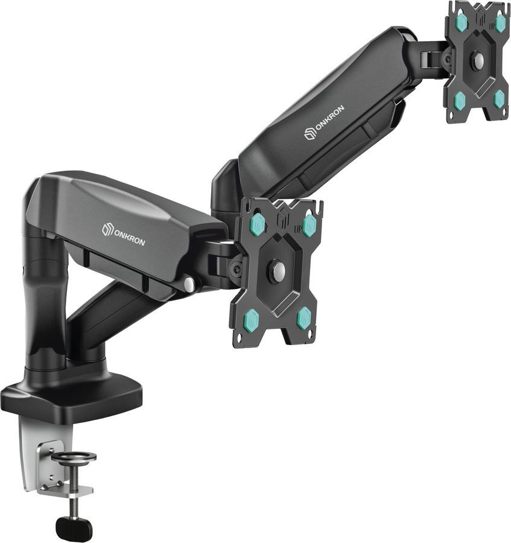
Клавиатура
Клавиатура моя - это AJAZZ AK820 PRO на смазанных оринговых свитчах Flying Fish. Она полностью настраивается с помощью специального софта для этой клавиатуры, можно установить разные режимы подсветки, уровень срабатывания нажатий и можно даже поставить анимацию на экран этой клавиатуры.
Я считаю это очень хорошая и тихая механическая клавиатура за 50$.
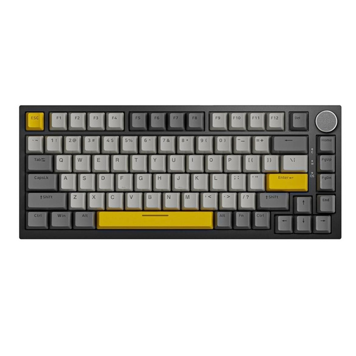
Компьютерная мышь
Мышка, которую я использую - это AJAZZ AJ159 APEX. Это отличная беспроводная мышка по радиоканалу 2.4 ГГц, а сенсор PAW3950 APEX позволяет установить DPI вплоть до 48000. Это лучшая мышка, по моему мнению, за 50$.
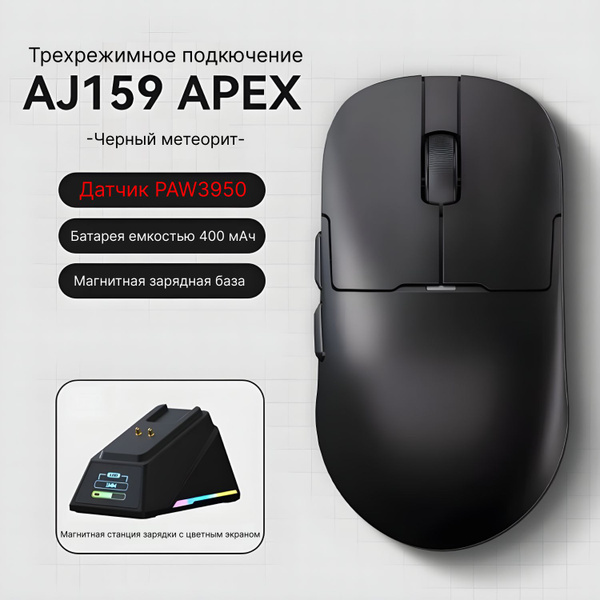
Наушники
А завершить свой список я хочу наушниками от компании ZONE 51 ATLAS. Это беспроводные наушники по тому же 2.4 ГГц каналу радиосвязи, со съёмным микрофоном и амбюшурами 92мм. Они очень удобны в использовании и хорошо сидят на голове, особенно они комфортны для моих достаточно больших ушей.
Это лучший выбор за меньше, чем 50$.
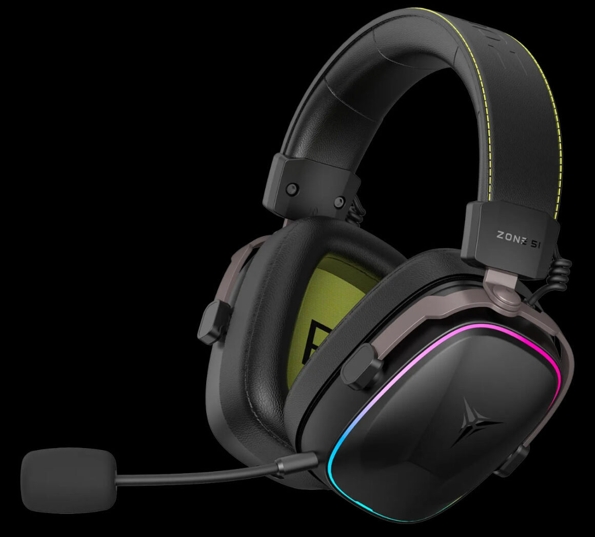
Итог
Итоговая сумма моего компьютера составила 403$. Итоговая сумма моей периферии составила 360$. А вместе всё стоит 763$.
Это всё я собирал долгие 2 года, копил на всё это, работал и зарабатывал, где только мог и я считаю, что всё это того стоило, ведь теперь я могу играть, работать, учиться и просто сёрфить в интернете.
На этом у меня всё, спасибо, что всё это прочитали, надеюсь вы найдёте здесь ту вещь, которую вам тоже захочется купить. Ссылки вставлять не буду, ведь это не реклама и мне не заплатили ни рубля за это.